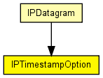

Option structure: Timestamp
The following diagram shows usage relationships between types. Unresolved types are missing from the diagram. Click here to see the full picture.
The following diagram shows inheritance relationships for this type. Unresolved types are missing from the diagram. Click here to see the full picture.
| Name | Type | Description |
|---|---|---|
| flag | int | |
| nextAddressPtr | short | |
| overflow | short | |
| recordAddress | IPAddress[MAX_TIMESTAMP_OPTION_ENTRIES] |
use either up to 4 addresses with timestamps or only up to 9 timestamps, according to the flag |
| recordTimestamp | simtime_t[MAX_IPADDR_OPTION_ENTRIES] |
// // Option structure: Timestamp // class IPTimestampOption { int flag @enum(TimestampFlag); short overflow; short nextAddressPtr; // use either up to 4 addresses with timestamps or // only up to 9 timestamps, according to the flag IPAddress recordAddress[MAX_TIMESTAMP_OPTION_ENTRIES]; simtime_t recordTimestamp[MAX_IPADDR_OPTION_ENTRIES]; }